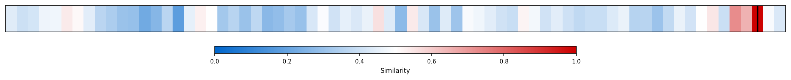
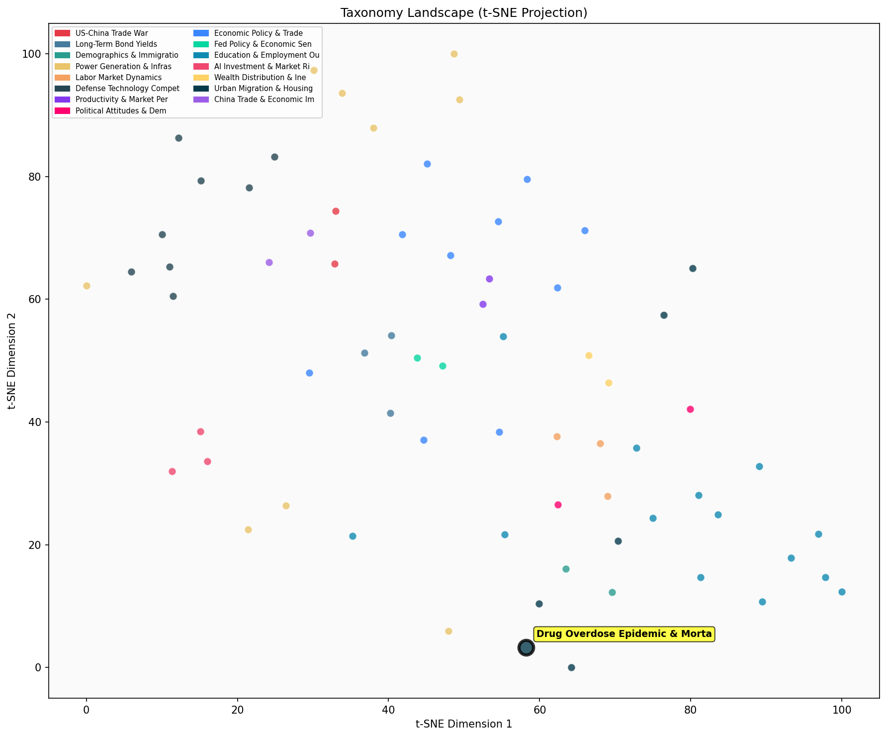

Description
This subcluster examines the evolving landscape of drug overdose mortality and addiction trends in the United States, with particular focus on the opioid and fentanyl epidemics. Articles analyze CDC mortality data, regional variation in overdose patterns, and economic drivers including drug pricing dynamics and market shifts. Coverage spans from supply-side factors like poppy cultivation economics to demand-side elements such as disability insurance correlations. Unlike sibling subclusters addressing housing costs or population mobility, this focuses specifically on public health crises affecting urban communities, tracking both the devastating peak of overdose deaths and recent encouraging declines, while exploring underlying socioeconomic determinants.
Similarity to All 70 Subclusters
Each cell represents a subcluster. Color intensity shows similarity (blue=low, red=high). Black line marks current subcluster position.
Relationship to Primary Clusters
Average similarity to each of the 15 primary clusters. Larger area = stronger relationship to that cluster.

Taxonomy Landscape
All 70 subclusters positioned by similarity (t-SNE). Current subcluster highlighted with label. Click to enlarge.
Network Connections
Current subcluster at center, connected to related subclusters. Line thickness = similarity strength.
Most Representative Articles
-
1. The opioid epidemic has been driven by economic factors, notably the decline in prices for both pres
-
2. Opioid overdose deaths rose 30% from 70,630 in 2019 to over 93,000 in 2020, largely driven by opioid
-
3. US drug overdose deaths fell 25% YoY as of Oct 2024, with 82,000 fatalities—driven by a decline in d
-
4. Between 2016 and 2021, drug overdose deaths involving fentanyl went from 5.7 per 100,000 to 21.6 per
-
5. A recent study challenges the notion that opioid addiction is primarily driven by economic despair,
Edge Cases (Boundary Articles)
-
1. Prices for poppies are plunging as fentanyl outcompetes heroin. In Guatemala, poppy prices have falThis article is borderline because while it discusses fentanyl's impact on drug markets, it focuses primarily on agricultural economics and pricing trends in Guatemala rather than directly examining overdose mortality or addiction trends in the United States. The geographic focus on Guatemala and emphasis on poppy farming economics makes it more tangentially related to the core themes of U.S. drug overdose epidemiology that define this cluster.
-
2. Cocaine is making a comeback, driven by European demand which has overtaken the US as the world’s laThis article is borderline because while it discusses cocaine production and trafficking trends, it focuses on global supply dynamics and market shifts rather than actual overdose mortality data or health outcomes that define the core cluster theme. The piece is more about international drug trade economics than the public health crisis and mortality trends that characterize most articles in this cluster.
-
3. .@christopherruhm examines adverse mortality trends for prime-age non-Hispanic Whites from 1999-2019This article is borderline for the drug overdose cluster because while it examines mortality trends among prime-age adults (which could include overdose deaths), it specifically challenges the "deaths of despair" narrative by arguing against mental health as the primary driver, suggesting the focus may be broader than just drug overdoses. The article appears to be more about general mortality analysis and debunking established theories rather than specifically examining drug overdose patterns or epidemic trends.
Original Dendrogram